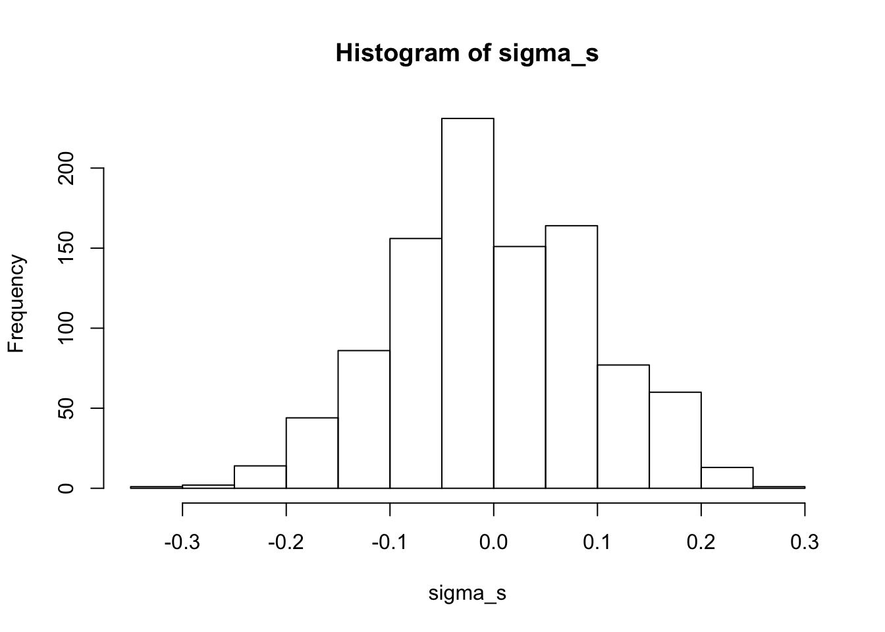
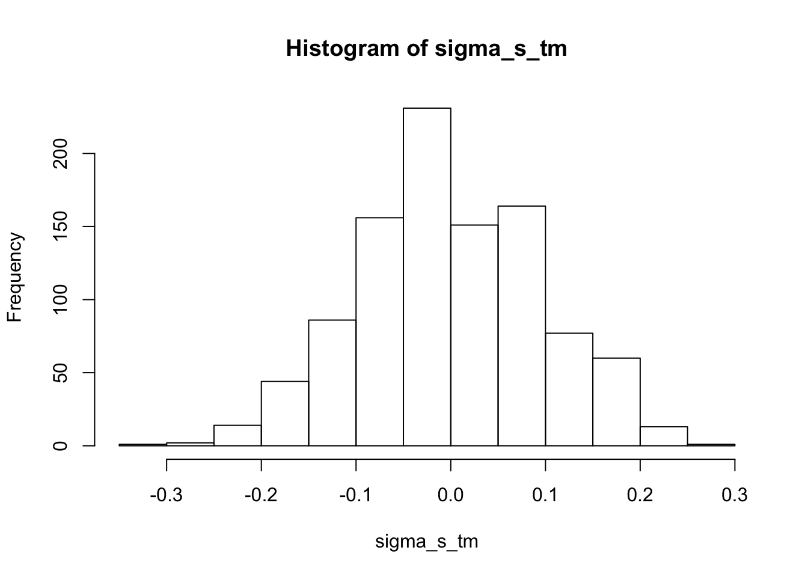
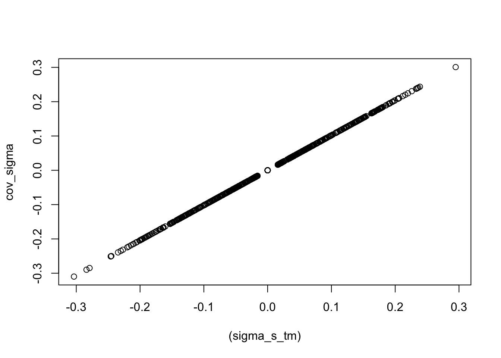
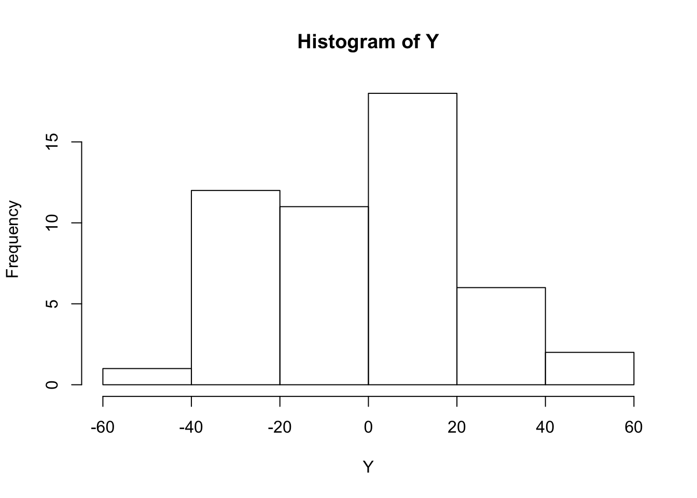
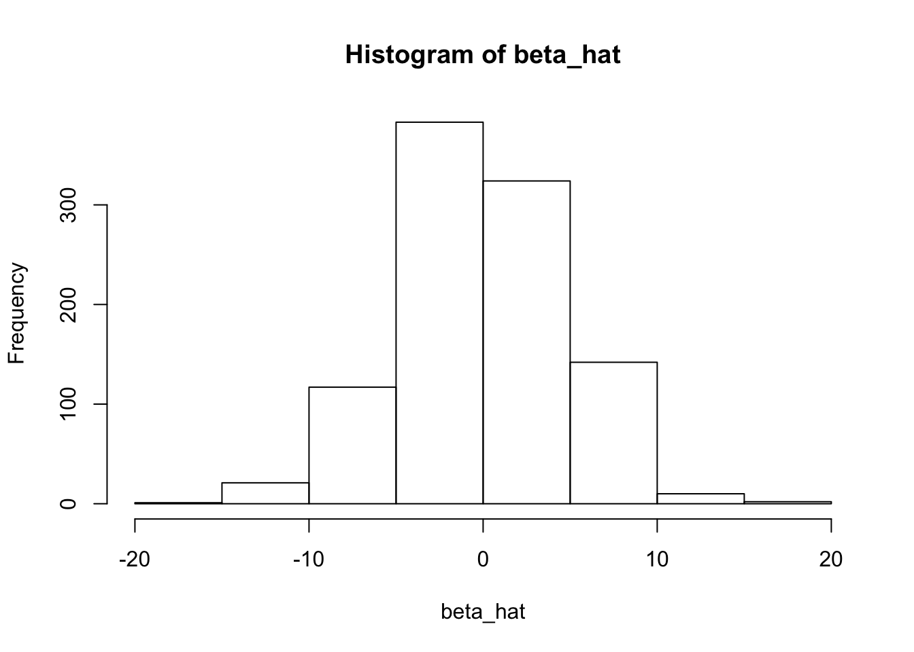
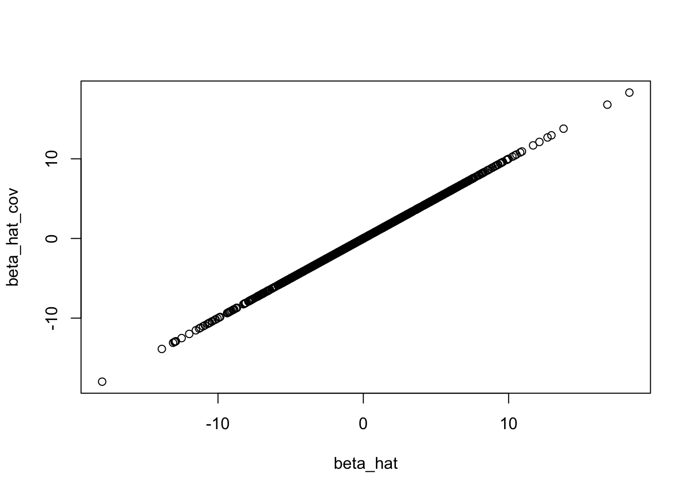
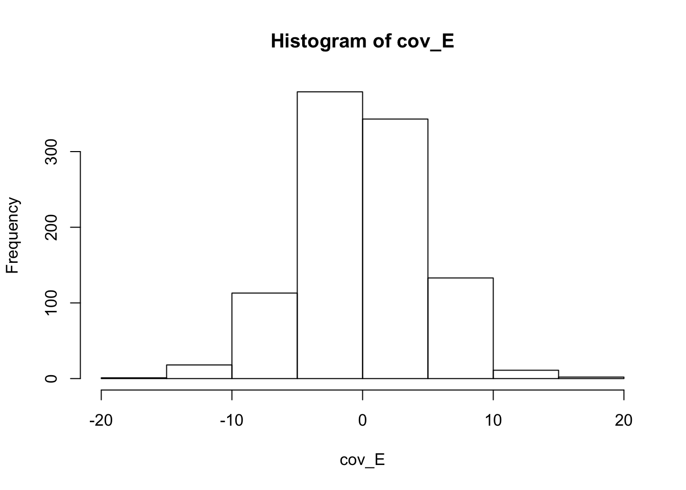
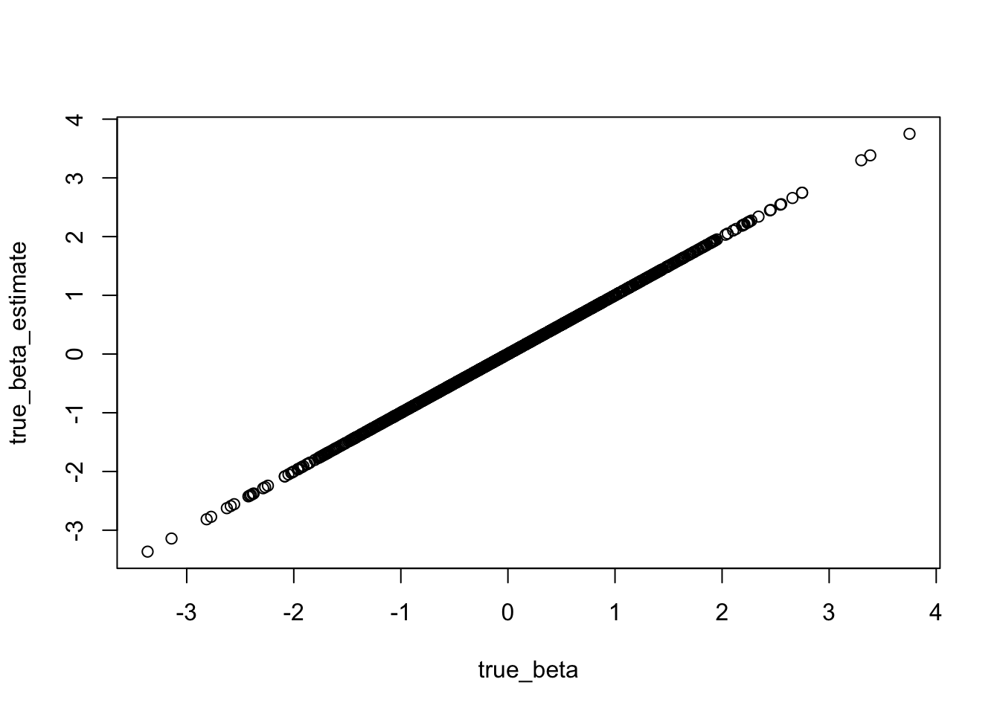
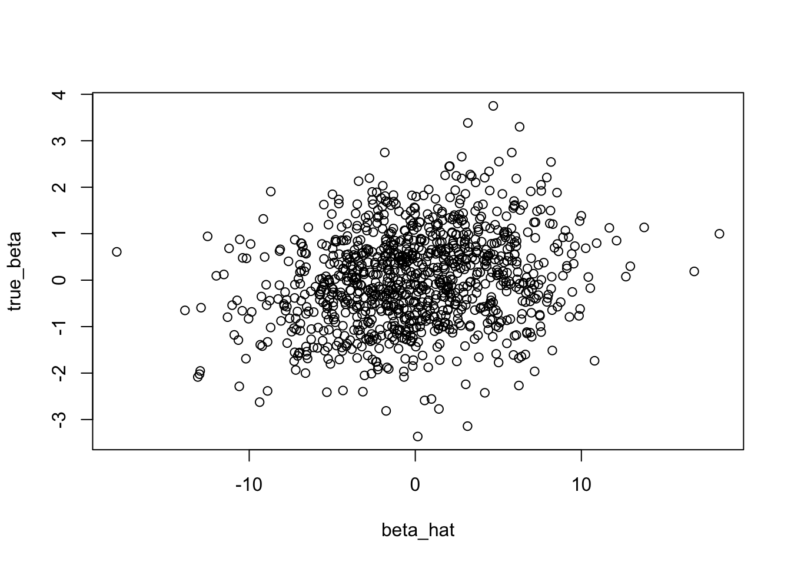

Last updated: 2020-11-15
Checks: 7 0
Knit directory: polygenic_adaptation_stratification/analysis/
This reproducible R Markdown analysis was created with workflowr (version 1.6.2). The Checks tab describes the reproducibility checks that were applied when the results were created. The Past versions tab lists the development history.
Great! Since the R Markdown file has been committed to the Git repository, you know the exact version of the code that produced these results.
Great job! The global environment was empty. Objects defined in the global environment can affect the analysis in your R Markdown file in unknown ways. For reproduciblity it’s best to always run the code in an empty environment.
The command set.seed(20201015) was run prior to running the code in the R Markdown file. Setting a seed ensures that any results that rely on randomness, e.g. subsampling or permutations, are reproducible.
Great job! Recording the operating system, R version, and package versions is critical for reproducibility.
Nice! There were no cached chunks for this analysis, so you can be confident that you successfully produced the results during this run.
Great job! Using relative paths to the files within your workflowr project makes it easier to run your code on other machines.
Great! You are using Git for version control. Tracking code development and connecting the code version to the results is critical for reproducibility.
The results in this page were generated with repository version 05d143a. See the Past versions tab to see a history of the changes made to the R Markdown and HTML files.
Note that you need to be careful to ensure that all relevant files for the analysis have been committed to Git prior to generating the results (you can use wflow_publish or wflow_git_commit). workflowr only checks the R Markdown file, but you know if there are other scripts or data files that it depends on. Below is the status of the Git repository when the results were generated:
Ignored files:
Ignored: .DS_Store
Ignored: .Rhistory
Ignored: .Rproj.user/
Ignored: data/.DS_Store
Ignored: data/4PopSplit/
Unstaged changes:
Modified: analysis/4Popsplit.Rmd
Modified: jupyter_notebooks/4PopSplit.ipynb
Note that any generated files, e.g. HTML, png, CSS, etc., are not included in this status report because it is ok for generated content to have uncommitted changes.
These are the previous versions of the repository in which changes were made to the R Markdown (analysis/scratch.Rmd) and HTML (docs/scratch.html) files. If you’ve configured a remote Git repository (see ?wflow_git_remote), click on the hyperlinks in the table below to view the files as they were in that past version.
| File | Version | Author | Date | Message |
|---|---|---|---|---|
| Rmd | 05d143a | jgblanc | 2020-11-15 | help |
Simulate Random Genotypes for both the Test and GWAS panels and a random test vector.
GWAS Panel and Test Panel are the same
L <- 1000
n <- 50
X <- matrix(rbinom(n*L, 2, 0.5), ncol = L, nrow = n)
M <- matrix(rbinom(n*L, 2, 0.5), ncol = L, nrow = n)
Tvec <- rbinom(n, 1, 0.5)Mean center everything
Tvec <- t(scale(Tvec, scale = F))
X <- scale(X, scale = F)
M <- scale(M, scale = F)Let’s say that the GWAS panel is the test panel
X <- MLet’s say that \(\vec{E} = \vec{T}\). Therefore,
\[\vec{E} = T_m\] \[\vec{T} = T_m\] \[\vec{T} = MX^T(XX^T)^{-1}\vec{T}\]
Since \(M = X\),
\[\vec{T} = XX^T(XX^T)^{-1}\vec{T}\].
When the test and GWAS panel are the same and the Environmental variable is the test vector, \(T_m = T\).
k <- X %*% t(X)
p_inv <- pseudoinverse(k)
Tm <- M %*% t(X) %*% p_inv %*% t(Tvec)
Tm <- t(round(Tm, 3))
table(Tm)Tm
-0.5 0.5
25 25 table(Tvec)Tvec
-0.5 0.5
25 25 \(T_m\) is the test vector. Let’s look at the stratification term, \(\sigma_s = \frac{\vec{E}MH}{n}\). When \(\vec{T} = \vec{E}\),
\[\sigma_s = \frac{\vec{T}MH}{n}\]
H <- diag(1/apply(M, 2, var))
sigma_s <- (Tvec %*% M %*% H) / n
hist(sigma_s)
Because \(\vec{T} = \vec{T_m}\) in this situation, this is equalivalent to,
\[\sigma_s = \frac{\vec{T_m}MH}{n}\]
\[\sigma_s = \frac{MX^T(XX^T)^{-1}\vec{T}MH}{n}\]
H <- diag(1/apply(M, 2, var))
sigma_s_tm <- (Tm %*% M %*% H) / n
hist(sigma_s_tm)
Remember that each of the \(L\) entries in \(\sigma_s\) is equal to \(\frac{cov(M_{.l}, E)}{var(M_{.l})}\) which in our scenario is equal to \(\frac{cov(M_{.l}, T)}{var(M_{.l})}\). We can calulate this term for each site independently and compare to our \(\sigma_s\) above.
cov_sigma <- rep(0, L)
for (i in 1:L) {
c <- cov(M[,i], t(Tvec))
cov_sigma[i] <- c / var(M[,i])
}
#cov_sigma
plot((sigma_s_tm), cov_sigma)
cor(t(sigma_s_tm), cov_sigma) [,1]
[1,] 1The term \(\frac{MX^T(XX^T)^{-1}\vec{T}MH}{n}\) is accurately capturing the stratification. (I think the minor difference is due to dividing by n instead of n - 1).
Now that we have \(\sigma_s\), let’s return to the full statistic we are interested in,
\[A_X = cov(\vec{G}, \vec{T})\] \[A_X = \frac{\vec{G}\vec{T}^T}{n}\] \[A_X = \frac{\vec{\hat{\beta}}X^T\vec{T}^T}{n}\]
Let’s simulate random mean centered \(\vec{\hat{\beta}}\) and check that the math checks out.
beta <- t(as.matrix(rnorm(L, 0, 0.5)))
G <- beta %*% t(X)
cov_Ax <- cov(t(G), t(Tvec))
math_Ax <- beta %*% t(X) %*% t(Tvec) / (n)
cov_Ax [,1]
[1,] -1.115202math_Ax [,1]
[1,] -1.092898This slight discrepency is due to dividing by n vs n - 1 (what is the right thing to do?).
Now let’s separate \(\hat{\beta}\) into its components,
\[A_X = (\beta + \sigma_s + \sigma_E)\frac{X^TT^T}{n}\].
Looking just at the stratification term and pluggin in \(\sigma_s\) from above,
\[\frac{MX^T(XX^T)^{-1}\vec{T}MH}{n}\frac{X^TT^T}{n}\].
sigma_s_tm %*% t(X) %*% t(Tvec) / n [,1]
[1,] 4.631745Something still feels wrong because this term scales with L so it will just get bigger the more sites we add which doen’t seem right.
Let’s try actually simulating the phenoyptes and doing the GWAS - maybe it will help figure out what is going on. (Keeping the same situation with same test and GWAS panels and \(E = T\)). Simulate true betas and the use the equation below to make phenotypes.
\[Y = \beta M^T + T + e\]
true_beta <- t(as.matrix(rnorm(L, 0, 1)))
#true_beta <- t(rep(0, L))
e <- t(as.matrix(rnorm(n, 0, 0.001)))
Y <- as.vector((true_beta %*% t(M)) + Tvec + e)
#Y <- (Y - mean(Y)) / sd(Y)
hist(Y)
Do GWAS to estimate each \(\hat{\beta}\) by regressing phenotype onto genotype.
beta_hat <- rep(0, L)
for (i in 1:L) {
x <- as.vector(M[,i])
mod <- lm(as.vector(Y) ~ x)
beta_hat[i] <- mod$coefficients[2]
}
hist(beta_hat)
Each entry of \(\hat{\beta}\) should equal \(\frac{cov(M_{.,l}, Y)}{var(M.,l)}\). Let’s check.
beta_hat_cov <- rep(0, L)
for (i in 1:L) {
x <- as.vector(M[,i])
beta_hat_cov[i] <- cov(as.vector(Y),x) / var(x)
}
plot(beta_hat, beta_hat_cov)
They are exactly the same. Now lets compare the true \(\beta\) to the estimated \(\hat{\beta}\), they should be biased along the test vector.
\[\hat{\beta} = \beta + \sigma_s +\sigma_E\]
Let’s calculate \(\sigma_E = \frac{cov(M_{.l}, K)}{var(M_{.l})}\) where \(K = \sum_{i \neq l}\beta_iM_{.l} + \epsilon\).
cov_E <- rep(0, L)
for (i in 1:L) {
#print(i)
x <- as.vector(M[,i])
K <- (true_beta[-i] %*% t(M[,-i])) + e
cov_E[i] <- cov(as.vector(K),x) / var(x)
}
hist(cov_E)
Let’s use our calculation of \(\sigma_s\) from above and see if we can recover true beta \(\hat{\beta} - \sigma_s-\sigma_E = \beta\)
true_beta_estimate = beta_hat - cov_sigma - cov_E
plot(true_beta, true_beta_estimate)
They are are they same (possibly off by n vs n-1). So now turning to our \(Ax = cov(G,T)\) statistic, the ground truth using the true beta’s is
Ax_true <- cov(as.vector(true_beta %*% t(M)), as.vector(Tvec))
Ax_true[1] -0.9191731Using \(\hat{\beta}\)
Ax_betahat <- cov(as.vector(beta_hat %*% t(M)), as.vector(Tvec))
Ax_betahat[1] -14.86853Using the \(\hat{\beta}\) corrected for stratification and random error \(\hat{\beta} - \sigma_s-\sigma_E = \beta\)
Ax_corrected <- cov(as.vector((true_beta_estimate) %*% t(M)), as.vector(Tvec))
Ax_corrected[1] -0.9191731Using just the correction for stratification along the test vector \(\hat{\beta} - \sigma_s\)
Ax_corrected <- cov(as.vector((beta_hat - cov_sigma) %*% t(M)), as.vector(Tvec))
Ax_corrected[1] -19.69125This does not seem right!
What if we include \(Tm\) (which in this is equal to \(T\)) in the GWAS as a covariate, this should fix the bias and \(\hat{\beta}\) should equal \(\beta\) except for random error.
beta_hat_tm <- rep(0, L)
for (i in 1:L) {
x <- as.vector(M[,i])
mod <- lm(as.vector(Y) ~ x + as.vector(Tm))
beta_hat_tm[i] <- mod$coefficients[2]
}cov(as.vector((beta_hat_tm) %*% t(M)), as.vector(Tvec))[1] -2.206833plot(beta_hat, true_beta)
In conclusion, still very confused!
sessionInfo()R version 3.6.2 (2019-12-12)
Platform: x86_64-apple-darwin15.6.0 (64-bit)
Running under: macOS High Sierra 10.13.6
Matrix products: default
BLAS: /Library/Frameworks/R.framework/Versions/3.6/Resources/lib/libRblas.0.dylib
LAPACK: /Library/Frameworks/R.framework/Versions/3.6/Resources/lib/libRlapack.dylib
locale:
[1] en_US.UTF-8/en_US.UTF-8/en_US.UTF-8/C/en_US.UTF-8/en_US.UTF-8
attached base packages:
[1] stats graphics grDevices utils datasets methods base
other attached packages:
[1] corpcor_1.6.9 workflowr_1.6.2
loaded via a namespace (and not attached):
[1] Rcpp_1.0.4.6 rprojroot_1.3-2 digest_0.6.25 later_1.1.0.1
[5] R6_2.4.1 backports_1.1.8 git2r_0.27.1 magrittr_1.5
[9] evaluate_0.14 stringi_1.4.6 rlang_0.4.6 fs_1.4.1
[13] promises_1.1.1 whisker_0.4 rmarkdown_2.3 tools_3.6.2
[17] stringr_1.4.0 glue_1.4.1 httpuv_1.5.4 xfun_0.15
[21] yaml_2.2.1 compiler_3.6.2 htmltools_0.5.0 knitr_1.29